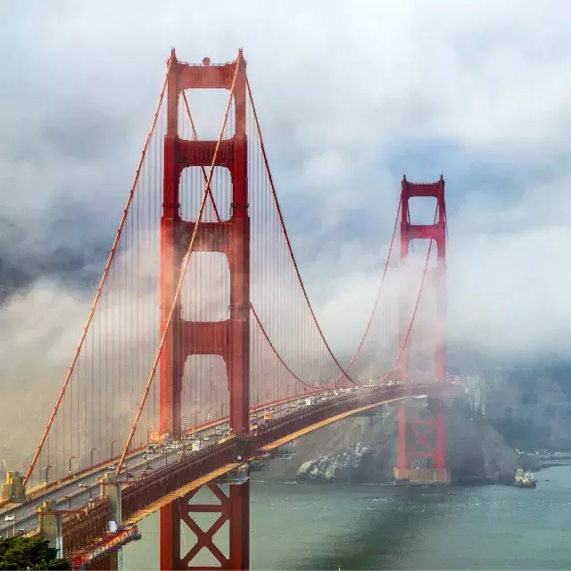

About San Francisco

San Francisco is a cultural, commercial, and financial center of Northern California. Famous for its steep hills, cable cars, and the iconic Golden Gate Bridge, the city is one of the most visited destinations in the world.
City Statistics
| Statistic | Information |
|---|---|
| Population | 873,965 (2020 Census) |
| Year Incorporated | 1850 |
| Region | San Francisco Bay Area / Northern California |
| Classification | Urban |
| Average Income | Well above state average |
Top Attractions in San Francisco
- Golden Gate Bridge
- Alcatraz Island
- Fisherman's Wharf and Pier 39
- Chinatown - oldest in North America
- Cable Car System
Key Features
- Global center for technology and innovation (Silicon Valley nearby)
- Diverse neighborhoods and vibrant cultural scene
- World-class dining and culinary experiences
- Historic cable car transportation system
- Mild Mediterranean climate year-round